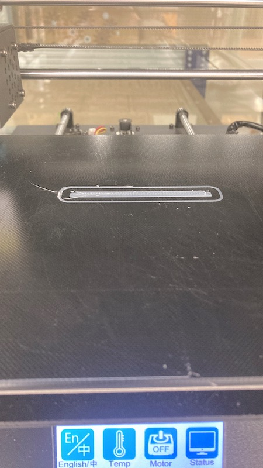
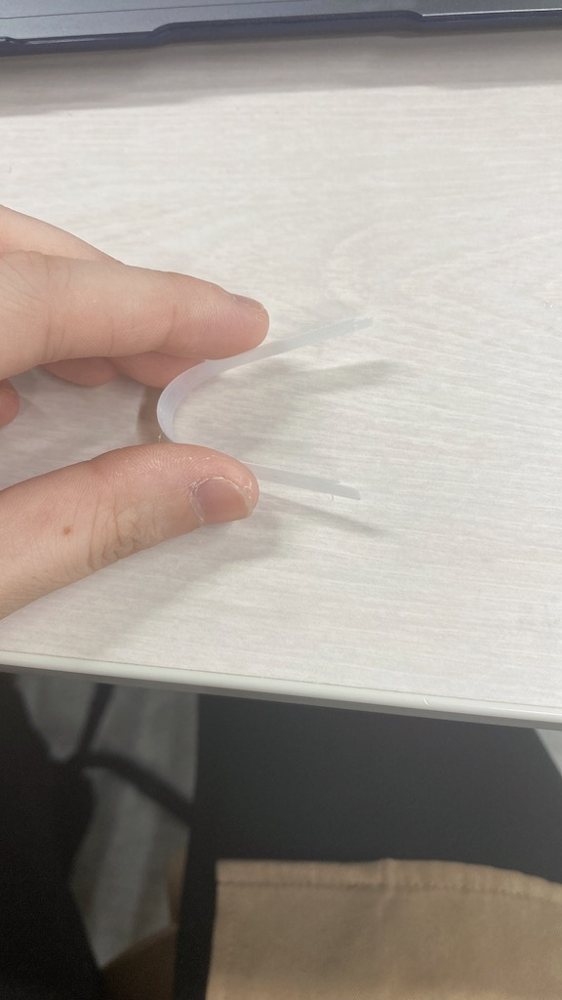
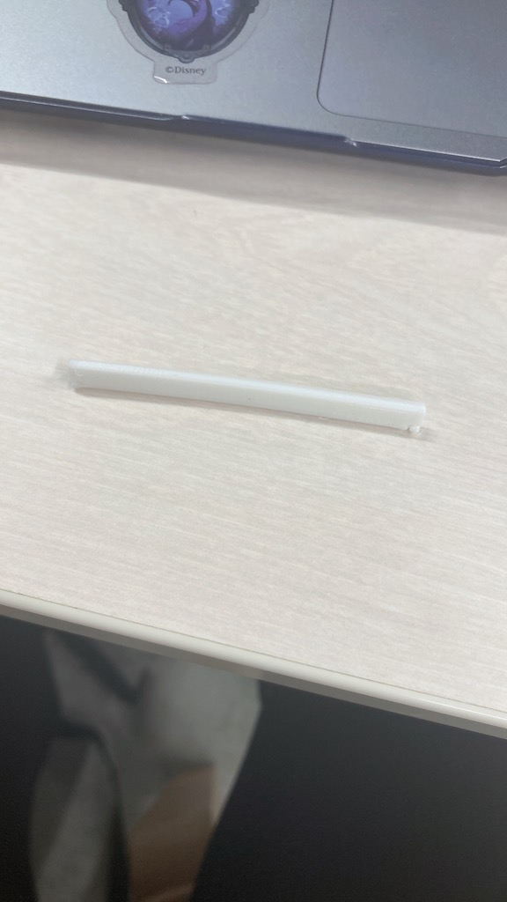
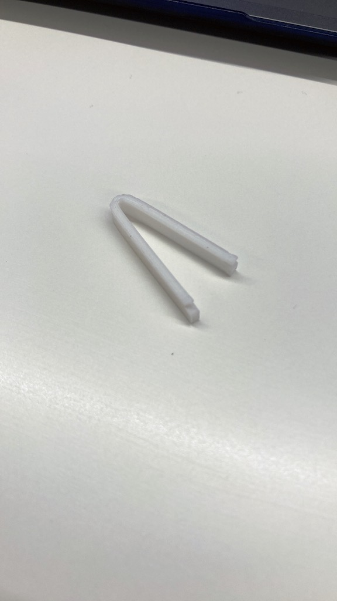
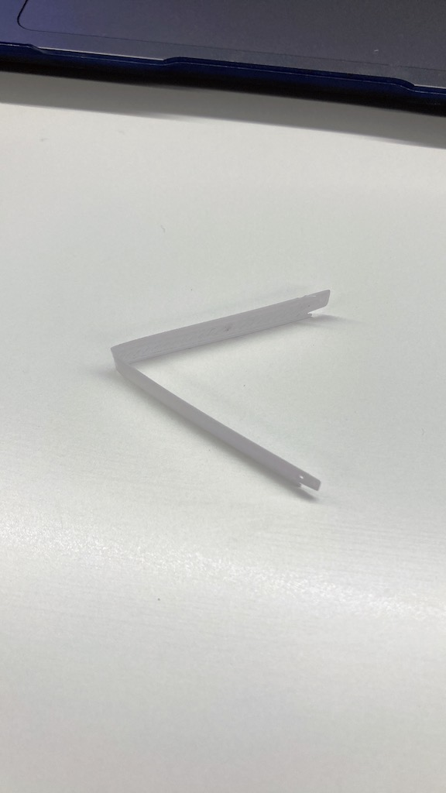

ピンセット
私が作ろうと思ったのは「薄いピンセット」である。本のしおりになるぐらい薄いけど物もゴミを取り除く程度には使えるようなものを考えた。
ちょっと発想力に乏しいので複雑な形にならないというのと、途中で「素材、なんなら厚紙でいいのでは…」とおもったりも
したのでとりあえず試作を作ってみることにした。


意外といけそう
プラスチックなので曲げるとピンセットになるようにしてみた。
もうちょっと厚くてもいいかなーと思ったのでリベンジ


厚すぎました。難しい。
つまんだ時にちゃんと戻るのでピンセットとしてはいいんだけどこれだと薄くないのでやっぱりもうちょっと考える。
あと先を少し欠けさせてたんだけどこの大きさだとあまり影響ないので変えた。

ちなみに小さすぎた方。完全に折ったら使えなくなった。
もちろんこれだけでは３Dモデリングに慣れないので少し遊んだり友達のを手伝ったりしてみる

スマホスタンド。線画を押し出しが最初よくわからなかったので線画を押し出してつくった。逆の方向に押し出すことができるのも
わかった。

↑横から見た図

適当につくったまる。コピーして移動させてみようと思う。

右クリックで左下の移動/コピーを押す。

「コピーを作成」にチェックを入れた状態で移動させると・・・

コピー完了！
その他わかったこと↓
- くり抜きをするときはくり抜きたい形のオブジェクトをつくって結合の設定を変えて結合する
- 大きさの調整はgcodeにする過程でできる